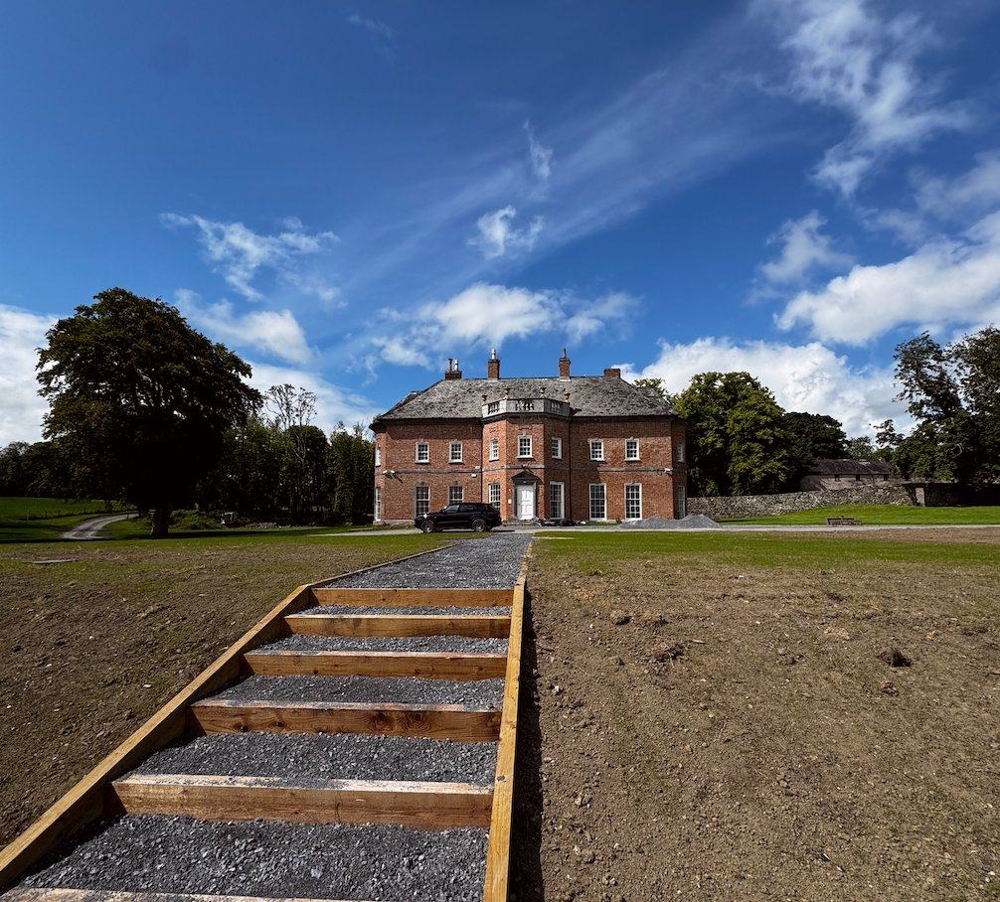
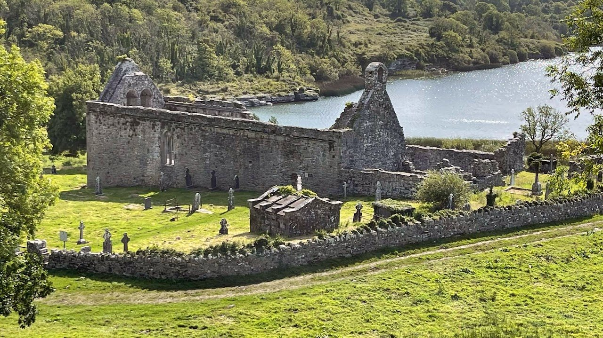
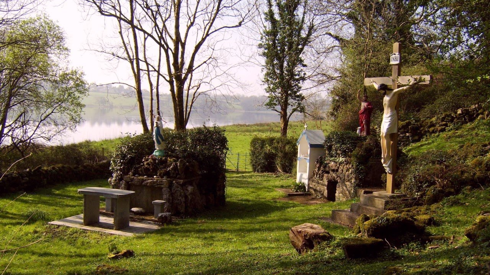
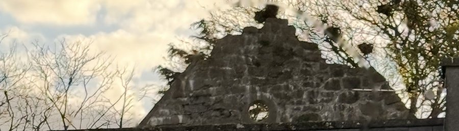
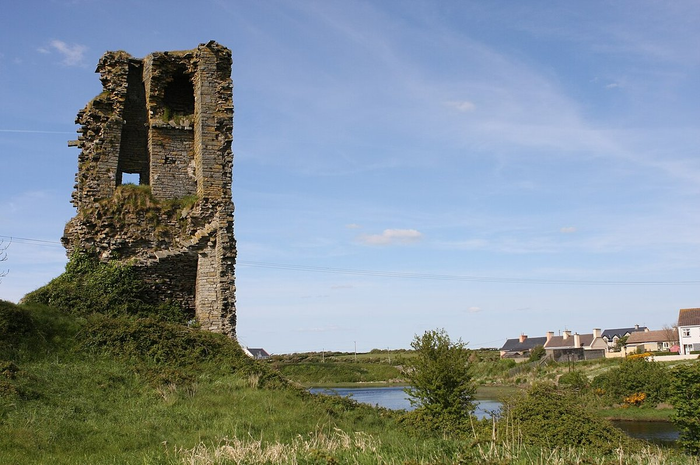
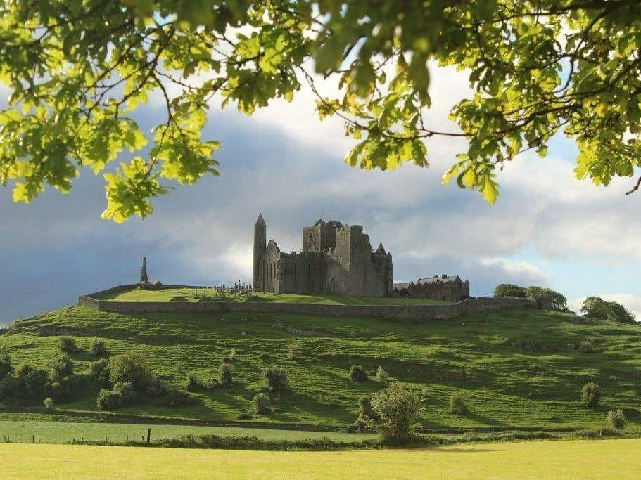

The inauguration site · Most sacred of all
Cahercommane — where Chiefs were consecrated
High on the limestone plateau of the Burren, on a cliff edge overlooking the valleys of north Clare, stands Cahercommane — the triple-ring stone fort that served as the ceremonial capital and inauguration site of the Chiefdom of Tulach Commáin. This is where the Chiefs of Ó Comáin were consecrated under Brehon law. It is one of the most spiritually charged sites in all of Munster.
"The identification of Commán suggests a historical horizon for the construction and use of some of these forts at a particular period… Cahercommane most probably gained its name from a Uí Fidgeinti sub-king named Commán."
— Claire Cotter, Western Stone Forts Project, Discovery Programme monograph, Wordwell Ltd, 2012, p.90
The inner wall alone used an estimated 16,500 tons of stone. The fort was constructed in the 8th–9th century AD at the height of the Chiefdom's power, excavated by the Harvard Archaeological Expedition in 1934 under Hugh O'Neill Hencken, and extensively studied by the Discovery Programme in 2012. Its triple concentric rings — each a sacred boundary — mark it as a site of exceptional political and ceremonial importance. Here, before the derbhfine, the new Chief was consecrated in a ritual of Brehon legitimacy stretching back over a millennium.
Regarded by historians as one of the most important early medieval sites in Munster, Cahercommane is the spiritual heartland of Clan Ó Comáin. Its stones remember what the documents cannot fully record — the weight of ceremony, the voice of the assembled clan, the moment when a Chief became a Chief.
Clan seat · Active
Newhall House
17th century · County Clare · Seat of the Chief

Newhall House is the seat of Clan Ó Comáin and the residence of the Commane's Fergus and Maria Kinfauns. A handsome house set in mature demesne lands in the parish of Killone, County Clare, it stands on the site of the former Killone Castle — Newhall House is said to have been built with stones from Killone Castle, and the basement of the house is believed to incorporate part of the original castle structure.
The estate encompasses Killone Abbey, the Holy Well of St John the Baptist, Killone Lake and extensive agricultural and woodland grounds. The estate is the administrative and spiritual centre of the clan's revival. The gate lodges and estate walls date to the same Georgian period as the house.
Clan gatherings, revival festivals and formal clan occasions are held on the estate, which is in active private use. Access to Killone Abbey is available with the owner's permission.
Sacred site · National monument
Killone Abbey
Founded 1190 AD · Augustinian · Cill Eoin

Killone Abbey — Mainistir Chill Eoin, the Church of John — was founded in 1190 by Donal Mór O'Brien, King of Thomond and Munster, for Augustinian canonesses. It was the first convent of Augustinian nuns in County Clare and one of only three cloistered nunneries remaining in Ireland. Its ruins stand on the northern shoreline of Killone Lake within the Newhall Estate.
The abbey became closely associated with the O'Brien dynasty — several abbesses were drawn from their ranks. Among them was Slaney O'Brien (d. 1260), daughter of the King of Thomond, described in the Annals of Inisfallen as "the most pious, most charitable, and most generous woman in all Munster." The abbey was suppressed in 1584 and recorded in ruins by 1617.
The Pilgrim's Path links Killone Abbey to Clare Abbey to the north. The site is protected under the National Monuments Acts, with guardianship vested in the Office of Public Works. It is privately owned by the Commane family — the custodians of its silence.
Heritage Ireland — Killone Abbey ↗
Sacred well · Site of veneration
Holy Well of St John the Baptist
Ancient · Inscriptions from 1600 · Newhall Estate

Adjacent to Killone Abbey on the northern shore of Killone Lake stands the Holy Well of St John the Baptist — a site of continuous veneration since at least the 6th century. The well is adorned with inscriptions, some dating to 1600, left by pilgrims across the centuries. Lord Walter Fitzgerald documented its inscriptions for the Royal Society of Antiquaries of Ireland in 1899.
The well is the sacred heart of the Newhall landscape. Each year on the Feast of St John the Baptist, an outdoor Mass is held at the well, continuing a tradition of pilgrimage that predates the Norman arrival in Ireland. It is deeply bound to the spiritual life of the clan's territory — the waters that sustained the nuns of Killone, the pilgrims of the Burren, and the people of the chiefdom before them.
The well, the abbey and the lake together form a sacred triangle within the estate — one of the most atmospherically complete early Christian landscapes in County Clare. The Commane family are its custodians.
Sacred foundation · County Galway
St Commán's Church, Kinvara
Early medieval · Ceann Mara · Abandoned 19th century

On a hillock above the harbour village of Kinvara — Ceann Mara, "head of the sea" — stands the abandoned ruin of St Commán's Church, the ancient foundation of Saint Commán, patron of Clan Ó Comáin. The Dictionary of National Biography (1887) records that Saint Commán "also founded the church of Ceann Mara, now Kinvara" — placing this foundation directly at the southern edge of Galway Bay, within sight of the Burren and the ancestral landscape of the clan.
The church's antiquity is confirmed by the Annals of the Four Masters, which record the death of Ailbhe of Ceann Mhara in 814 AD — establishing that a church was already built and dedicated at this site by the early 9th century at the very latest. The 11th-century Voyage of the Uí Chorra describes the destruction of "the church of the holy old man Coman of Kinvara" at the hands of sea marauders — and records that the penitent brothers rebuilt it as an act of restitution, a testament to the church's significance.
The site commands a remarkable position above Kinvara Bay, looking north across the waters of Galway Bay towards the Aran Islands. Dunguaire Castle, whose foundations date to the royal house of Guaire Aidne mac Colmáin, stands a few hundred yards away. St Commán's Church has been abandoned since the late 19th century and is severely neglected — a reminder of the urgent need for the clan's revival and stewardship of its sacred heritage.
Wikipedia — Coman of Kinvara ↗
Historical holding · 1619 AD
Doonbeg Castle
16th century · West Clare · Atlantic coast

Doonbeg Castle — Dún Beag, the small fort — is a four-storey 16th century tower house on the Atlantic coast of west Clare, overlooking the Doonbeg River and Doughmore Bay. In 1619, Daniel O'Brien, Earl of Thomond, conveyed Doonbeg Castle to James Comyn — a direct connection between the castle and the Ó Comáin / Comyn lineage documented in the historical record.
The castle's history reflects the turbulence of Gaelic Clare. Originally associated with the MacMahon lords of Corca Baiscinn, it was seized by Turlough MacMahon in 1585, reclaimed by the O'Briens in 1595 after a fierce siege, and granted to James Comyn in 1619. The Crown confiscated it in 1688 and it was sold in 1703. By the 19th century it had become a ruin, though local families continued to inhabit its floors into the 1930s.
The castle stands today as a ruin in the village of Doonbeg. Its connection to the Comyn name in 1619 is one of the clearest documentary links between the clan's lineage and a surviving Clare monument.
Ancestral holding · Kilmaley
Ballymacooda
Townland · Parish of Kilmaley · Barony of Islands · County Clare
Ballymacooda — Baile Mhic Uada — is a townland in the Civil Parish of Kilmaley, in the Barony of Islands, County Clare: the same barony as Newhall House and Killone Abbey. The townland of 510 acres lies in the heart of the clan's ancestral territory, in the landscape between Ennis and the Burren that the chiefdom called home.
The townland is recorded in the Landed Estates database of the University of Galway — a resource documenting the landholding history of Irish estates from the 17th to the 20th century. Its Irish name, Baile Mhic Uada, preserves the Gaelic form of a family association with this land across the centuries.
Ballymacooda sits within the Barony of Islands — the same administrative unit that encompasses Newhall, Killone, and the townland of Tullycommon (Tulach Commáin), in the landscape the clan held for over a millennium. It is part of the broader constellation of clan territory that the Ó Comáin family occupied across medieval Clare.
Landed Estates database — Ballymacooda ↗
Royal seat · Éoganacht · Vassal chiefdom
Rock of Cashel
4th century onwards · County Tipperary · Seat of the Kings of Munster
The Rock of Cashel — Carraig Phádraig, St Patrick's Rock — was the ancient seat of the Éoganacht kings of Munster, one of the most powerful dynasties of early medieval Ireland. Rising dramatically from the Tipperary plain, it was the ceremonial and political capital of the Kings of Munster for over a millennium.
The Chiefdom of Tulach Commáin, and the Ó Comáin family's role as kings of the Déisi Munster, places them within the broader political world of Munster over which Cashel presided. The historian David Blair Gibson, in his landmark study of the chiefdom, and Claire Cotter (2012) in the Western Stone Forts Project, both note evidence suggesting a possible short-lived Éoganacht chiefdom centred at Cahercommane itself. The Uí Fidgeinti — the branch of Munster from which Cotter identifies the sub-king Commán who named the fort — were closely associated with the Éoganacht political world.
The connection between the Chiefdom of Tulach Commáin and the Kingdom of Cashel reflects the layered political geography of early medieval Munster — where local chiefdoms operated within, and owed allegiance to, the great royal dynasties whose seat was the Rock. Cashel is not a clan holding — it is the seat of the overlords under whose umbrella the clan's ancestors exercised their own power in north Clare.
